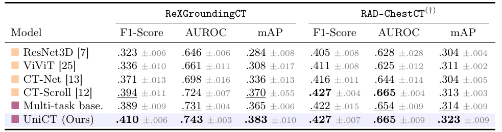
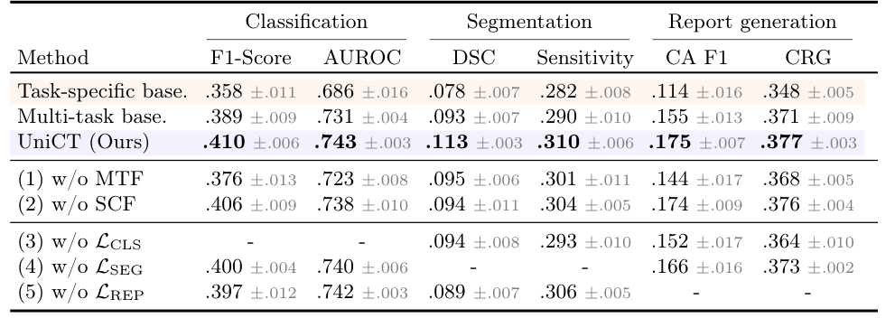
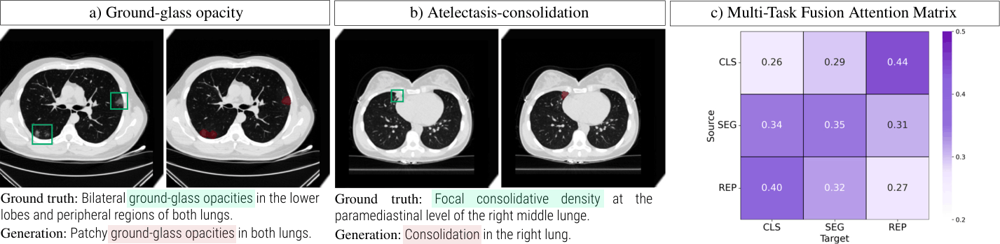

CT-AGRG
ISBI 2025
Report generation
UniCT jointly addresses multi-label abnormality classification, segmentation and automated report generation in a unified framework. The input 3D CT scan is processed through a visual encoder to obtain slice-level and global representations of the volume. Task specific latent representations for abnormality classification, segmentation, and report generation are then derived via adapters and refined through a multi-task fusion module to enable information exchanges across tasks. Features are finally passed to independent modules for task-specific predictions.

Models are trained on ReXGroundingCT, using 5-fold cross-validation patient-level splits (70/15/15).
We first evaluate UniCT on the multi-label abnormality classification task. We report F1-Score, AUROC and mAP performances on the held-out test set, averaged across the 10 considered abnormalities from ReXGroundingCT. For cross-dataset generalization, models are evaluated on RAD-ChestCT, where pulmonary nodes and micronodules are combined as nodes.

Key findings:
Internal evaluation: UniCT outperforms both classification-only and the multi-task baselines, suggesting that combining classification with segmentation and report generation supervision enhances the modeling of abnormality patterns.
External validation: Under distribution shift, UniCT achieves strong generalization, matching CT-Scroll in F1-Score and AUROC, while additionally providing segmentation masks and radiology reports.
UniCT is further evaluated on the abnormality segmentation and automated report generation tasks, performing a cross-task ablation study to quantify the impact of model components. Evaluation is limited to ReXGroundingCT, as only abnormality binary labels are available from RAD-ChestCT.

Key findings:
Multi-task learning provides complementary supervision, sharing spatial and semantic reasoning that benefits all tasks.
The fusion module (1), enabling interaction between task-specific representations, is crucial to enhance multi-task learning.
The segmentation modulation (2) operates as a targeted mechanism that enhances dense prediction.
Classification supervision (3) provides a strong global supervisory signal that facilitates effective learning for other tasks.
Segmentation supervision (4) encourages spatially-aware feature learning which benefits to other tasks.
Report generation supervision (5) provides complementary semantic supervision for discriminative and dense tasks.
We show an example of correct predictions (a & b), and the multi-task fusion attention matrix (c) averaged across attention heads, test samples and cross-validation folds. Manually drawn reference boxes (in green) are shown to facilitate visualization.

Key observations:
Example of correct predictions illustrates UniCT's ability to provide discriminative predictions, spatial grounding and clinically coherent textual descriptions.
The attention matrix reveals structured collaboration between tasks. Classification and report generation exhibit strong bidirectional interactions, while segmentation distributes attention more uniformly across tasks.
In this work of academic research, our experiments are run on public Computed Tomography datasets. We acknowledge contributors from CT-RATE [1], ReXGroundingCT [2] and RAD-ChestCT [3] for releasing the datasets to the research community.
[1] Generalist foundation models from a multimodal dataset for 3D CT. Hamamci et al. 2026.
[2] A 3D Chest CT Dataset for Segmentation of Findings from Free-Text Reports. Baharoon et al. 2025.
[3] Machine-learning-based multiple abnormality prediction with large-scale chest CT volumes. Draelos et al. 2021.
@article{dipiazza_2026_unict,
author = {Di Piazza, Theo and Lazarus, Carole and Nempont, Olivier and Boussel, Loic},
title = {UniCT: A Unified Joint Multi-Task Framework for 3D Chest CT Abnormality Analysis},
booktitle = {International Conference on Medical Image Computing and Computer-Assisted Intervention (MICCAI)},
year = {2026},
}Explore additional recent work in medical image analysis related to this project. Click on the images to access the corresponding project pages.
CT-AGRG
ISBI 2025
Report generation

CT-Scroll
MIDL 2025
2.5D Representation learning

CT-SSG
MELBA Journal 2026
Multi-task learning